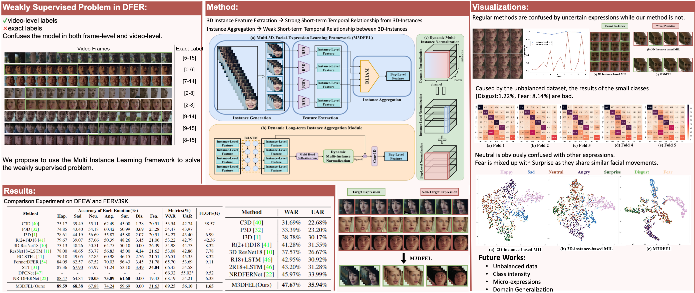
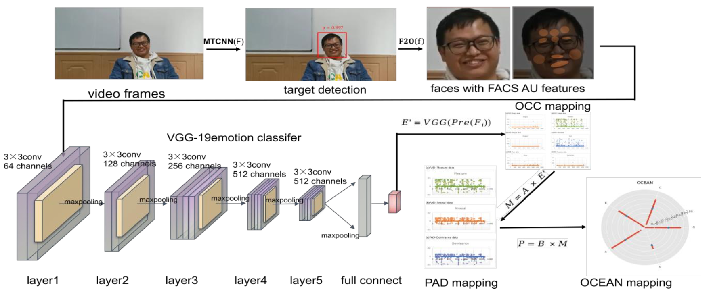
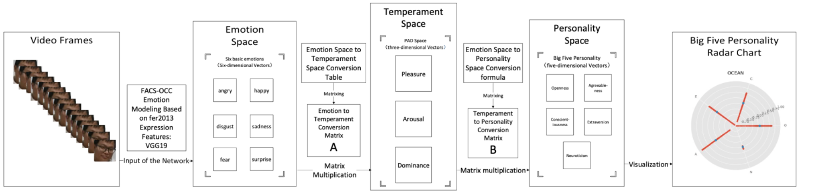
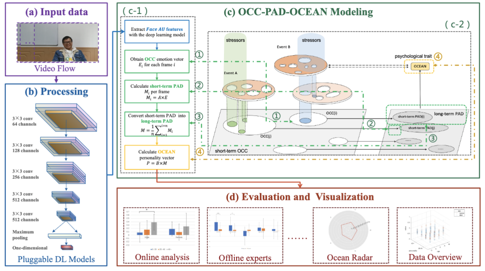
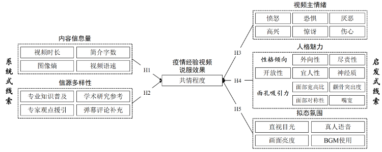
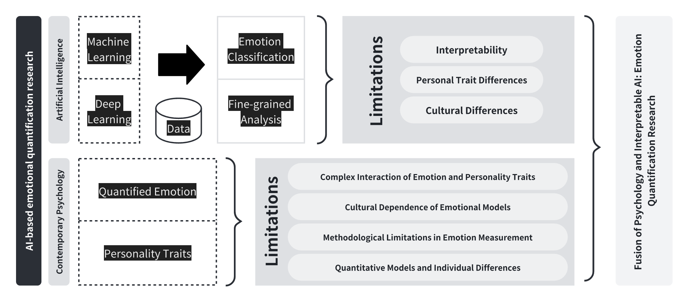
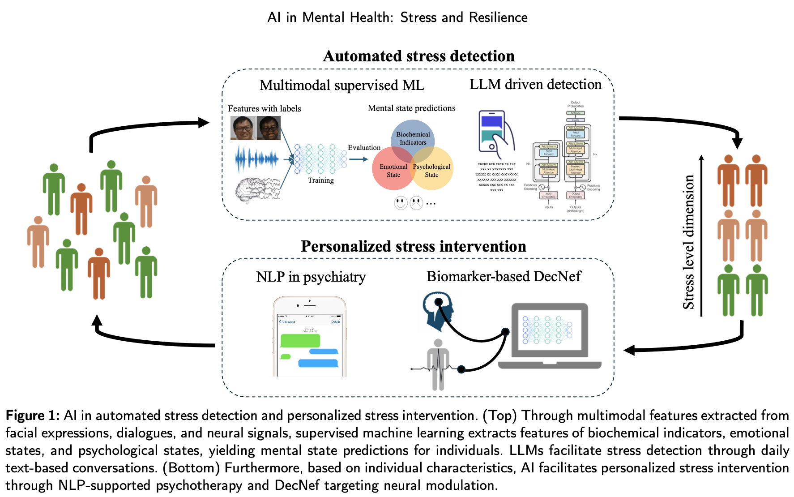
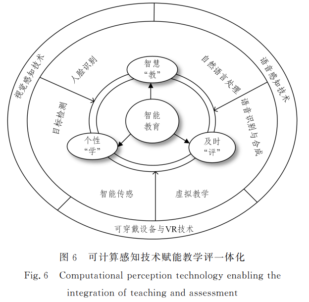

What we focus?Permalink
After preliminary exploration of qualitative emotion analysis through various human-centered techniques, including human facial expressions (micro-expressions, macro-expressions, and dynamic expressions), voice emotions, gesture emotions, and electroencephalography emotions, we have initiated two lines of research. We are focusing on two distinct yet interrelated areas of research. The first is the development of technology and theoretical mechanisms related to quantitative emotion analysis. The second is the research and development of technology for depression, anxiety, loneliness, and other applications related to computational psychiatry. For more detailed information about current research please see publications.
Affective Computing
Dynamic Facial Expression Recognition (DFER)
Dynamic Facial Expression Recognition (DFER) is a rapidly developing field that focuses on recognizing facial expressions in video format. Previous research has considered non-target frames as noisy frames, but we propose that it should be treated as a weakly supervised problem. We also identify the imbalance of short and long term temporal relationships in DFER. Therefore, we introduce the Multi-3D Dynamic Facial Expression Learning (M3DFEL) framework, which utilizes Multi-Instance Learning (MIL) to handle inexact labels. M3DFEL generates 3D-instances to model the strong short-term temporal relationship and utilizes 3DCNNs for feature extraction. The Dynamic Long-term Instance Aggregation Module (DLIAM) is then utilized to learn the long-term temporal relationships and dynamically aggregate the instances. Our experiments on DFEW and FERV39K datasets show that M3DFEL outperforms existing state-of-the-art approaches with a vanilla R3D18 backbone.

Speech Emotion Recognition (SER)
Recent advancements in self-supervised models have led to the effectiveness of pre-trained speech representations in downstream Speech Emotion Recognition (SER) tasks. However, previous research has primarily focused on exploiting pre-trained representations and simply adding a linear head on top of the pre-trained model, while overlooking the design of the downstream network. In this paper, we propose the Temporal Shift Module with Pre-trained Representations to integrate channel-wise information without introducing additional parameters or FLOPs. By incorporating the temporal shift module, we have developed corresponding shift variants for three baseline building blocks, namely ShiftCNN, ShiftLSTM, and Shiftformer. Furthermore, we propose two technical strategies, namely placement of shift and proportion of shift, to balance the trade-off between mingling and misalignment. Our family of temporal shift models outperforms state-of-the-art methods on the benchmark IEMOCAP dataset under both fine-tuning and feature extraction settings. Additionally, through comprehensive experiments using wav2vec 2.0 and HuBERT representations, we have identified the behavior of the temporal shift module in downstream models, which may serve as an empirical guideline for future exploration of channel-wise shift and downstream network design.

Quantitative Affective Computing Modeling with 'OCC-PAD-X'
AI Modeling of 'OCC-PAD-OCEAN'
In recent years, it is a difficult issue to integrate the deep cross-fertilization and interpretable cognitive modeling methods from the basic theory of emotional psychology with deep learning and other algorithms. To address this problem, a cognitive model that integrates the VGG-facial action coding system (FACS)-OCC model based on fer2013 expression features and the OCC-pleasure-arousal-dominance (PAD)-openness, conscientiousness, extraversion, agreeableness, and neuroticism (OCEAN) fusion of the basic theory of emotional psychology, namely, a computational affection-based OCC-PAD-OCEAN federation cognitive modeling (OPO-FCM), is constructed. By constructing this model and performing formal proof algorithms, it is shown that the OPO-FCM can acquire expression features in video streams, complete the acquisition of expression features in videos by training a deep neural network, map expressions to the PAD emotion space through the established expression–basic emotions–emotion space mapping relationship, and finally complete the mapping of the average emotion over a period time. The information of personality space is obtained through it. Finally, the experimental simulation of the model is conducted, and the results show that the average accuracy of the valid tested personalities is 79.56%. This article takes the knowledge-driven approach of emotional psychology as a starting point and combines deep learning techniques to construct interpretable cognitive models, thus providing new ideas for future cross-innovation between computer technology and psychology theory.


Psychological Mechanisms study of 'OCC-PAD-OCEAN'
In the realm of Human-Centred Artificial Intelligence, there is a growing emphasis on psychologically interpretable AI. This study represents an interdisciplinary fusion of computer science and psychology, aiming to revolutionize personality trait analysis through deep learning techniques. Centered on the 'OCC-PAD-OCEAN' model, our research leverages the robust VGG19 deep learning architecture to analyze video data, aligning with the Big Five personality dimensions. This innovative method overcomes the inherent limitations of traditional questionnaires by providing a more accurate and computationally efficient alternative for psychological evaluations.Our empirical findings indicate a substantial correlation between our model's deep learning-based predictions and the results from conventional questionnaires, showcasing the model's capability to accurately reflect subtle individual differences within the Big Five traits. Interestingly, our analysis uncovers minimal gender-related variations, yet notable age-related distinctions in traits such as Agreeableness and Neuroticism.This research not only introduces a groundbreaking methodology for personality assessment but also sheds light on the transformative power of integrating deep learning into psychological analyses. This study provides theoretical and empirical support for the role of Big Five personality measures with psychological interpretability.

Application Study of 'OCC-PAD-OCEAN'
During the health crisis, personal experience videos created by self media have received widespread attention and frequently triggered audience empathy. This article applies empathy theory and HSM theory to construct a "heuristic-systematic" clue analysis framework from the perspective of the dual path of empathy. The research takes 968 health crisis experience videos and 152,789 comments from the BiliBili website as the research object. Using interpretable machine learning technology that integrates XGBoost and SHAP algorithms, the study investigates the importance and direction of 27 persuasive cues in influencing the effectiveness of audience empathy in the dimension of informative content, source diversity, emotional expression, personality charm and mimetic atmosphere. The study revealed 10 promoting cues (i.e. facial symmetry, conscientious personality, etc.) and 4 inhibitory cues (i.e. surprise, image entropy, etc.) that significantly affect audience empathy. The conclusion enriches our understanding of the regularities of the dissemination of folk experience videos in academia, and also provides theoretical reference for the empathy guidance practice of self media platforms, government departments, and official institutions.

Computational Psychiatry with Quantitative Affective Computing
AI Tool of Loneliness, Depression, and Anxiety (LDA) with 'OCC-PAD-LDA'
Negative emotions such as loneliness, depression, and anxiety (LDA) are prevalent and pose significant challenges to emotional well-being. Traditional methods of assessing LDA, reliant on questionnaires, often face limitations due to participants' inability or potential bias. This study introduces emoLDAnet, an AI-driven psychological framework that leverages video-recorded conversations to detect negative emotions through the analysis of facial expressions and physiological signals. We recruited fifty participants to undergo questionnaires and interviews, with their responses recorded on video. The emoLDAnet employs a combination of deep learning (e.g., VGG11), and machine learning (e.g., decision trees) to identify emotional states. The emoLDAnet incorporates the OCC-PAD-LDA psychological transformation model, enhancing the interpretability of AI decisions by translating facial expressions into psychologically meaningful data. Results indicate that emoLDAnet achieves high detection rates for loneliness, depression, and anxiety, with F1-scores exceeding 80% and Kendall's correlation coefficients above 0.5, demonstrating strong agreement with traditional scales. The study underscores the importance of the OCC-PAD-LDA model in improving screening accuracy and the significant impact of machine learning classifiers on the framework's performance. The emoLDAnet has the potential to support large-scale emotional well-being early screening, and contribute to the advancement of mental health care.

Applied Psychology-Health and Well Being
Perspective
AI in Emotion Quantification
The field of Artificial Intelligence(AI) is witnessing a rapid evolution in the field of emotion quantification. New possibilities for understanding and parsing human emotions are emerging from advances in this technology. Multi-modal data sources, including facial expressions, speech, text, gestures, and physiological signals, are combined with machine learning and deep learning methods in modern emotion recognition systems. These systems achieve accurate recognition of emotional states in a wide range of complex environments. This paper provides a comprehensive overview of research advances in multi-modal emotion recognition techniques. This serves as a foundation for an in-depth discussion combining the field of AI with the quantification of emotion, a focus of attention in the field of psychology. It also explores the privacy and ethical issues faced during the processing and analysis of emotion data, and the implications of these challenges for future research directions. In conclusion, the objective of this paper is to adopt a forward-looking perspective on the development trajectory of AI in the field of emotion quantification. and also point out the potential value of emotion quantification research in a number of areas, including emotion quantification platforms and tools, computational psychology and computational psychiatry.

CAAI Artificial Intelligence Research
Review
AI in Mental Health
The last few decades have witnessed a revolution in the field of mental health, brought about by state-of-the-art techniques of artificial intelligence (AI). Building on recent advances, the current review addresses the evidence for the systematic application of AI for the accurate detection of stress-related mental health problems and effective interventions to build stress resilience. We first explore the potential application of AI in stress detection and screening, through advanced computational techniques of machine learning algorithms that analyse biomarkers of stress and anxiety, including neural oscillations and physiological responses. Building on the accurate detection of mental health problems, we further review the evidence for AI-based stress interventions and propose the promising prospect of applying decoded neurofeedback (DecNef) as a personalised resilience-building intervention based on objective biomarkers. Taken together, the current review assesses the effectiveness of AI technologies in real-world applications and demonstrates the transformative impact of AI on the field of mental health by improving the accuracy and effectiveness of stress detection and intervention.

Current Opinion in Behavioral Sciences
AI in Intelligent Education
With the advancement and development of educational technology,computational perception technologies such as deep learning,machine learning,virtual reality,and the Internet of Things are increasingly being applied in human-centric,empathetic education,playing a key role in empowering educational transformation.However,there is still limited knowledge regarding the application of these technologies in intelligent education.This study systematically analyzes the progress and applications of computational perception technologies in intelligent education,drawing on perceptible data from both physical and virtual spaces,such as facial expressions,speech,text,eye movements,touch,and physiological signals.This study conducts a statistical analysis and screening of currently published journal articles and conference papers.The study explores the advancements and applications of these technologies,discussing their potential impacts and challenges in educational practice.Finally,a forward-looking discussion on the future development directions of computational perception technologies in intelligent education is presented based on the conclusions of this study.

JoiningPermalink
We are transforming the existing paradigm of affective computing through quantitative affective computing with the help of AI technology. Join us if you are interested!